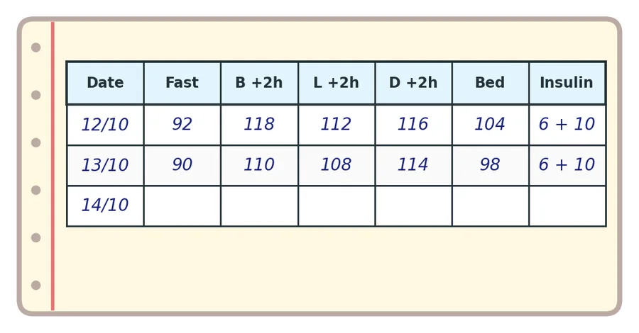
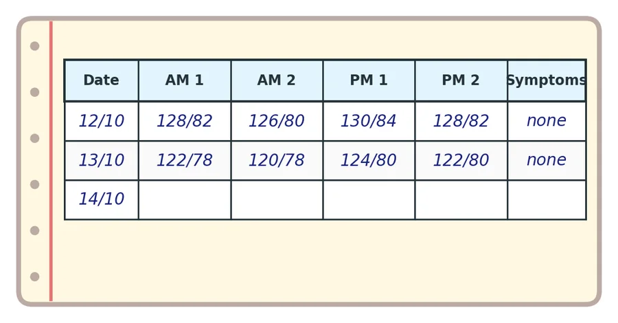
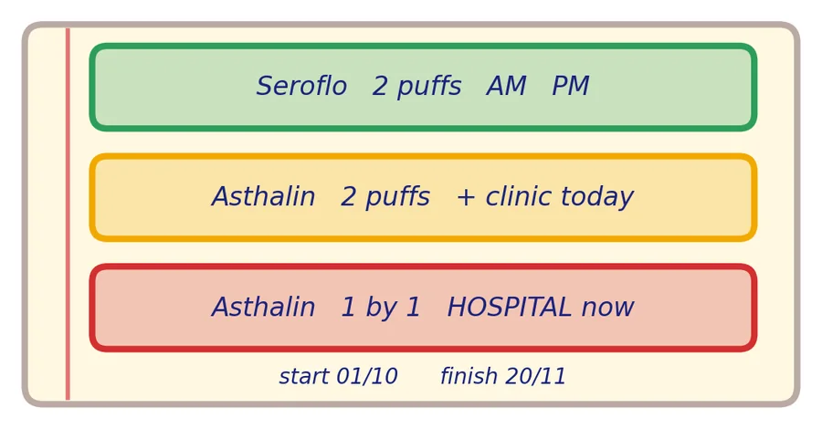
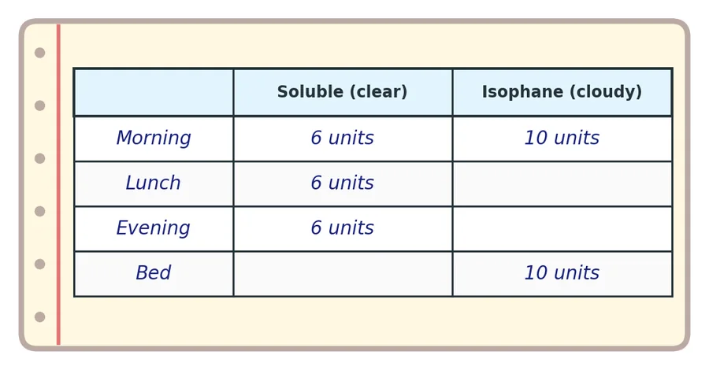
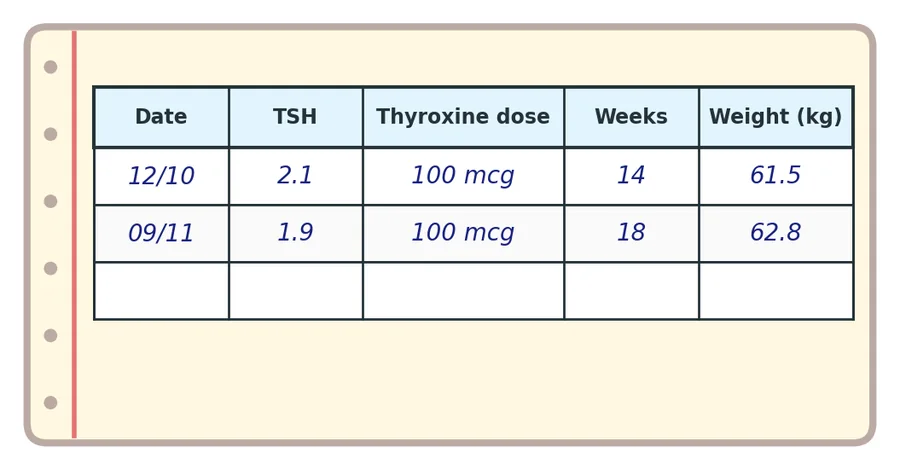

නිදර්ශනය: රුධිර සීනි පිටුව
மாதிரி: இரத்தச் சர்க்கரைப் பக்கம்
| දිනය | නිරාහාරව | උදේ ආහාරයෙන් පැය 2 | දහවල් ආහාරයෙන් පැය 2 | රාත්රී ආහාරයෙන් පැය 2 | නිදාගැනීමට පෙර | ඉන්සියුලින් (ඒකක) |
|---|
- ගර්භනී ඉලක්ක: නිරාහාරව 95 ට අඩු, පැය 2 කට පසු 120 ට අඩු.
| தேதி | வெறும் வயிறு | காலை உணவுக்குப் பின் 2 மணி | மதிய உணவுக்குப் பின் 2 மணி | இரவு உணவுக்குப் பின் 2 மணி | படுக்கைக்கு முன் | இன்சுலின் (அலகுகள்) |
|---|
- கர்ப்பிணி இலக்குகள்: வெறும் வயிறு 95 க்குக் குறைவு, 2 மணி நேரத்திற்குப் பின் 120 க்குக் குறைவு.

නිදර්ශනය: රුධිර පීඩන පිටුව
மாதிரி: இரத்த அழுத்தப் பக்கம்
| දිනය | උදේ 1 වන | උදේ 2 වන | සවස 1 වන | සවස 2 වන | රෝග ලක්ෂණ |
|---|
- 140/90 හෝ ඊට වැඩි: සායනයට කතා කරන්න. 160/110 හෝ ඊට වැඩි, හෝ අනතුරු ඇඟවීම්: දැන්ම රෝහලට.
| தேதி | காலை 1வது | காலை 2வது | மாலை 1வது | மாலை 2வது | அறிகுறிகள் |
|---|
- 140/90 அல்லது அதற்கு மேல்: கிளினிக்கை அழையுங்கள். 160/110 அல்லது அதற்கு மேல், அல்லது ஆபத்து அறிகுறிகள்: உடனே மருத்துவமனைக்கு.

නිදර්ශනය: ඉන්හේලරය සහ ඇදුම සැලැස්ම
மாதிரி: இன்ஹேலரும் ஆஸ்துமாத் திட்டமும்
- කොළ: උදේ සහ සවස Seroflo ____ පෆ්.
- කහ: Asthalin ____ පෆ්; අද සායනයට.
- රතු: Asthalin එකින් එක පෆ්; දැන්ම රෝහලට.
- ඉන්හේලරය ආරම්භ කළ දිනය ____ අවසන් වන දිනය ____.
- பச்சை: காலை, மாலை Seroflo ____ பஃப்.
- மஞ்சள்: Asthalin ____ பஃப்; இன்றே கிளினிக்கிற்கு.
- சிவப்பு: Asthalin ஒவ்வொரு பஃப்பாக; உடனே மருத்துவமனைக்கு.
- இன்ஹேலர் தொடங்கிய தேதி ____ முடியும் தேதி ____.

නිදර්ශනය: ඉන්සියුලින් පිටුව
மாதிரி: இன்சுலின் பக்கம்
| දිය වන (පැහැදිලි) | අයිසොෆේන් (බොඳ) | |
|---|---|---|
| උදේ | ____ | ____ |
| දහවල් | ____ | |
| සවස | ____ | |
| නිදාගැනීමට පෙර | ____ |
- වයල් එක විවෘත කළ දිනය ____. ඉවත දමන දිනය ____.
| கரையும் (Soluble, தெளிவான) | ஐசோஃபேன் (கலங்கலான) | |
|---|---|---|
| காலை | ____ | ____ |
| மதியம் | ____ | |
| மாலை | ____ | |
| படுக்கைக்கு முன் | ____ |
- குப்பி திறந்த தேதி ____. தூக்கியெறியும் தேதி ____.

නිදර්ශනය: තයිරොයිඩ් සහ බර පිටුව
மாதிரி: தைராய்டு, எடைப் பக்கம்
| දිනය | TSH | තයිරොක්සින් මාත්රාව | ගර්භණී සති ගණන | බර (kg) |
|---|
| தேதி | TSH | தைராக்சின் அளவு | கர்ப்ப வாரங்கள் | எடை (kg) |
|---|
